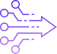
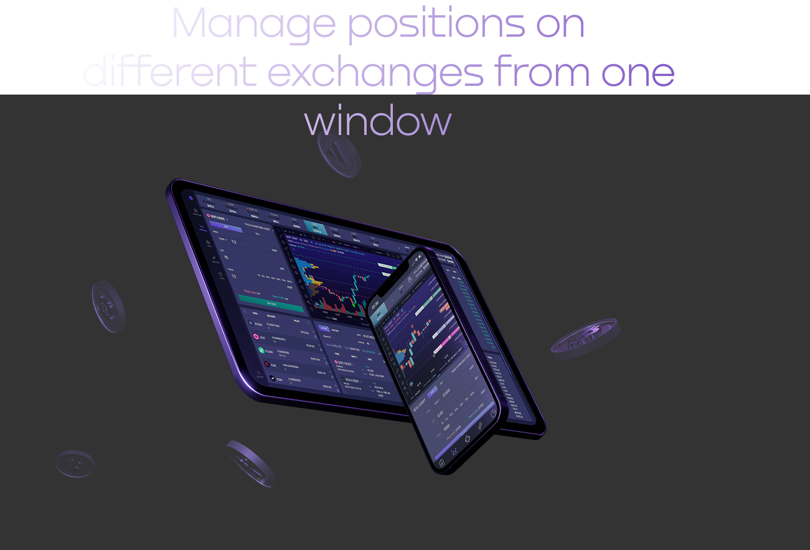
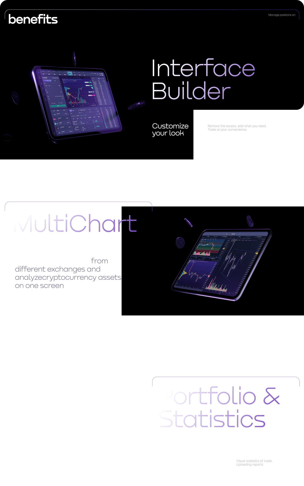

Speed

Your assets on all connected exchanges are collected in one place
.png)



Your assets on all connected exchanges are collected in one place
.png)
Use hot keys to work faster
.png)
Get important email and Telegram notifications
.png)
Updates are usually invisible. No break from trade.
.png)
Trade anytime. Even at night.
Limit risks and set several Take Profit levels for each trade.
Use flexible trailing options that follow the market.
Close a position after a set time or when a selected candle closes.
Create orders above or below the current price without blocking balance funds.
Create, edit and manage trades directly on the chart.
Automatically trade within a selected price channel.
Build entry and exit grids and track the average entry price.
Move Stop Loss to breakeven after the first Take Profit.
Enter and manage Binance Futures positions with two buttons.
Quickly close active smart trades and exit positions.
Enter your email and we’ll send you a secure sign-in link. New accounts are created automatically.
You are signed in as